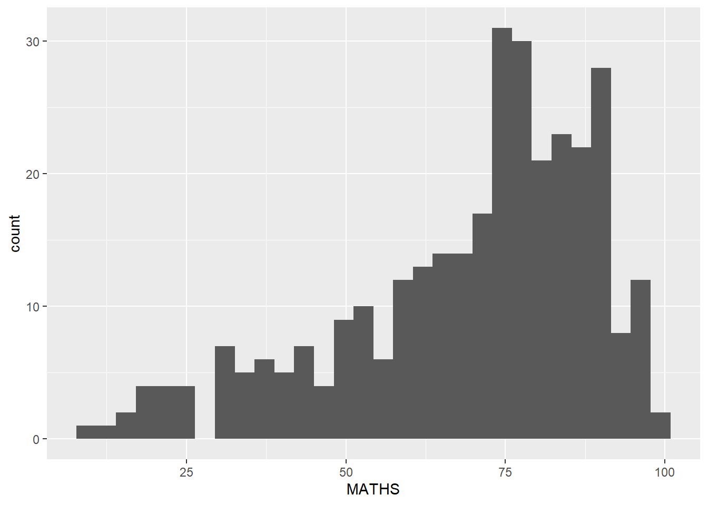
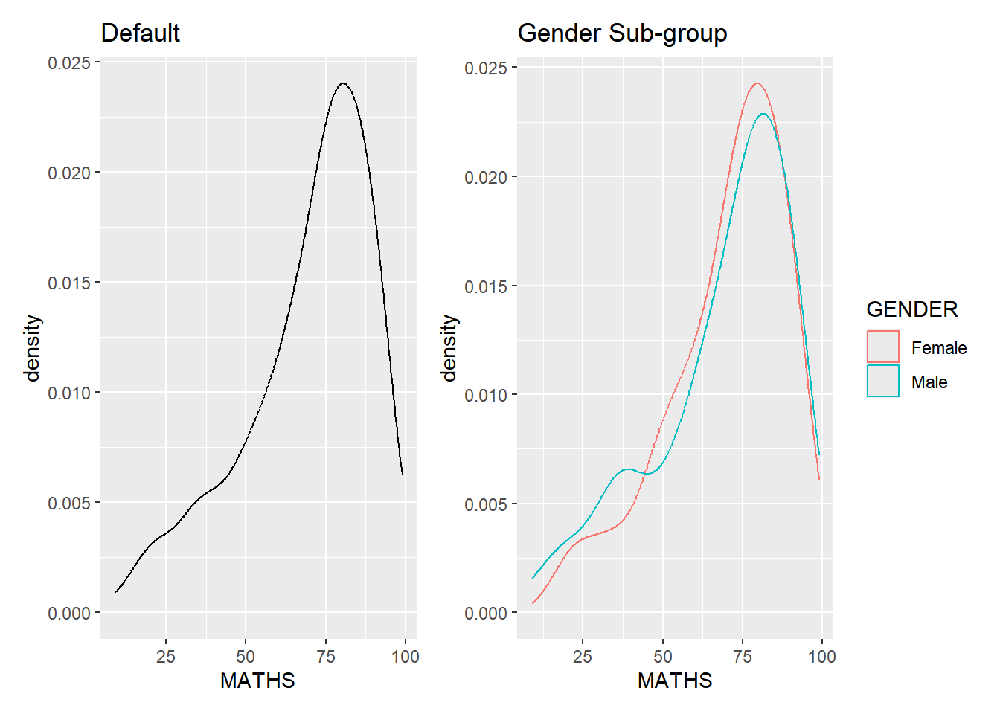
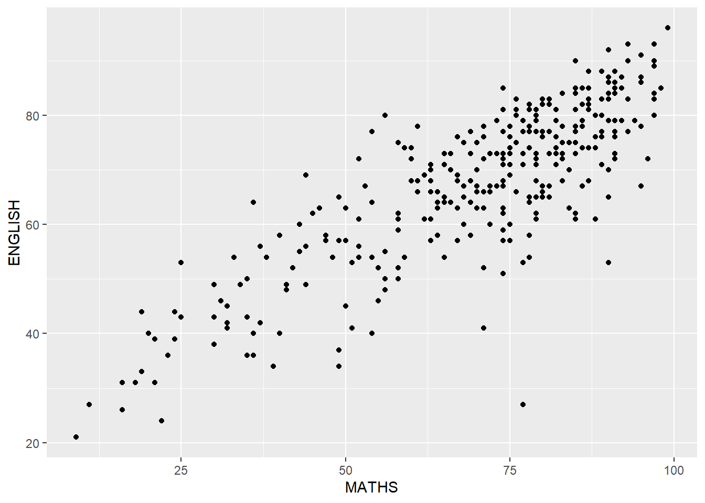

pacman::p_load(tidyverse, patchwork)Hands-On Exercise 1: A Layered Grammar of Graphics: ggplot2 methods
1.1 Learning Outcome
In this chapter, the basic principles and essential components of ggplot2 will be explored. At the same time, I will develop hands-on experience using these components to plot statistical graphics based on the principle of Layered Grammar of Graphics. By then end of this chapter, I will apply the essential graphical elements provided by ggplot2 to create elegant and yet functional statistical graphics.
1.2 Getting Started
1.2.1 Install and Load the Required Libraries
The code chunk below uses p_load() of pacman package to check if tidyverse these packages are installed in the computer. If they are, then they will be launched into R.
Before starting, it is important to ensure that the required R packages have been installed. If they are installed, the R packages will be loaded. Otherwise, the the R packages will first be installed then loaded into the R environment.
Note
The code chunk below assumes that pacman package is already installed. If not, install pacman first.
Note
Patchwork is used for easier comparisons between graphs. Further explanation on how to create it can be found in Hands-On Exercise 2: Section 2.5.1
1.2.2 Importing the Data
The code chunk below imports exam_data.csv into R environment by using read_csv() function of readr package since the file is in csv format. The readr part of the tidyverse package.
exam_data <- read_csv("data/Exam_data.csv")The data:
- Year end examination grades of a cohort of primary 3 students from a local school.
- There are a total of seven attributes. Four of them are categorical data type and the other three are in continuous data type.
- Categorical Attributes: ID, CLASS, GENDER and RACE.
- Continuous Attributes: MATHS, ENGLISH and SCIENCE.
1.3 Introducing ggplot
 is an R package for declaratively creating data-driven graphics based on The Grammar of Graphics.
is an R package for declaratively creating data-driven graphics based on The Grammar of Graphics.

It is also part of the tidyverse family specially designed for visual exploration and communication.

For more detail, visit ggplot2.
1.3.1 R Graphics VS ggplot
Comparing how R Graphics, the core graphical functions of Base R and ggplot plot a simple histogram.
hist(exam_data$MATHS)
ggplot(data=exam_data, aes(x = MATHS)) +
geom_histogram(bins=10,
boundary = 100,
color="black",
fill="grey") +
ggtitle("Distribution of Maths scores")As you can see that the code chunk is relatively simple if R Graphics is used. Then, the question is why ggplot2 is recommended?
As pointed out by Hadley Wickham
Important
The transferable skills from ggplot2 are not the idiosyncrasies of plotting syntax, but a powerful way of thinking about visualisation, as a way of mapping between variables and the visual properties of geometric objects that you can perceive.
Tip
ggplot2 gives much more functionalities on how to style the graph
1.4 Grammar of Graphics
Before using ggplot2, it is important to understand the principles of Grammer of Graphics.
Grammar of Graphics is a general scheme for data visualization which breaks up graphs into semantic components such as scales and layers. It was introduced by Leland Wilkinson (1999) Grammar of Graphics, Springer. The grammar of graphics is an answer to a question:
What is a statistical graphic?
In the nutshell, Grammar of Graphics defines the rules of structuring mathematical and aesthetic elements into a meaningful graph.
There are two principles in Grammar of Graphics, they are:
- Graphics = distinct layers of grammatical elements
- Meaningful plots through aesthetic mapping
A good grammar of graphics will allow us to gain insight into the composition of complicated graphics, and reveal unexpected connections between seemingly different graphics (Cox 1978). It also provides a strong foundation for understanding a diverse range of graphics. Furthermore, it may also help guide us on what a well-formed or correct graphic looks like, but there will still be many grammatically correct but nonsensical graphics.
1.4.1 A Layered Grammar of Graphics
ggplot2 is an implementation of Leland Wilkinson’s Grammar of Graphics. Figure below shows the seven grammars of ggplot2.

Reference: Hadley Wickham (2010) “A layered grammar of graphics.” Journal of Computational and Graphical Statistics, vol. 19, no. 1, pp. 3–28.
A short description of each building block are as follows:
- Data: The dataset being plotted.
- Aesthetics take attributes of the data and use them to influence visual characteristics, such as position, colours, size, shape, or transparency.
- Geometrics: The visual elements used for our data, such as point, bar or line.
- Facets split the data into subsets to create multiple variations of the same graph (paneling, multiple plots).
- Statistics, statistical transformations that summarise data (e.g. mean, confidence intervals).
- Coordinate systems define the plane on which data are mapped on the graphic.
- Themes modify all non-data components of a plot, such as main title, sub-title, y-aixs title, or legend background.
1.5 Essential Grammatical Elements in ggplot2: Data
Let us call the ggplot() function using the code chunk below.
ggplot(data=exam_data)
Note
- A blank canvas appears
ggplot()initializes a ggplot object- The data argument defines the dataset to be used for plotting
- If the dataset is not already a data.frame, it will be converted to one by
fortify()
1.6 Essential Grammatical Elements in ggplot2: Aesthetic Mappings
The aesthetic mappings take attributes of the data and and use them to influence visual characteristics, such as position, colour, size, shape, or transparency. Each visual characteristic can thus encode an aspect of the data and be used to convey information.
All aesthetics of a plot are specified in the aes() function call (in later part of this lesson, you will see that each geom layer can have its own aes specification).
The code chunk below adds the aesthetic element into the plot.
ggplot(data=exam_data,
aes(x= MATHS))
Tip
- All aesthetics of a plot are specified in the aes() function call and the code above adds MATHS to the x-axis
- ggplot includes the x-axis and the axis’s label
1.7 Essential Grammatical Elements in ggplot2: geom
Geometric objects are the actual marks we put on a plot. Examples include:
- geom_point for drawing individual points (e.g., a scatter plot)
- geom_line for drawing lines (e.g., for a line charts)
- geom_smooth for drawing smoothed lines (e.g., for simple trends or approximations)
- geom_bar for drawing bars (e.g., for bar charts)
- geom_histogram for drawing binned values (e.g. a histogram)
- geom_polygon for drawing arbitrary shapes
- geom_map for drawing polygons in the shape of a map! (You can access the data to use for these maps by using the map_data() function)

- A plot must have at least one geom; there is no upper limit. You can add a geom to a plot using the + operator.
- For complete list, please refer to here.
1.7.1 Geometric Objects: geom_bar()
ggplot(data=exam_data,
aes(x=RACE)) +
geom_bar()
What if I want to show the code only or the graph only?
Use #| eval: false to show code without plotting graph
ggplot(data=exam_data,
aes(x=RACE)) +
geom_bar()Use #| echo: false to plot graph without showing code

Tip
eval and echo is very useful in patchwork and panel-tabset
1.7.2 Geometric Objects: geom_dotplot()
In a dot plot, the width of a dot corresponds to the bin width (or maximum width, depending on the binning algorithm), and dots are stacked, with each dot representing one observation.
In the code chunk below, geom_dotplot() of ggplot2 is used to plot a dot plot.
d1 <- ggplot(data=exam_data,
aes(x = MATHS)) +
geom_dotplot(dotsize = 0.5) +
ggtitle("With y-axis")
d2 <- ggplot(data=exam_data,
aes(x = MATHS)) +
geom_dotplot(binwidth=2.5,
dotsize = 0.5) +
scale_y_continuous(NULL,
breaks = NULL) +
ggtitle("Without y-axis")
d1 + d2
Warning
The y scale is not very useful, in fact it is very misleading.
Tip
The code chunk below performs the following two steps:
- scale_y_continuous() is used to turn off the y-axis, and
- binwidth argument is used to change the binwidth to 2.5.
Note
The code uses patchwork for easier comparisons between graphs. Further explanation on how to create it can be found in Hands-On Exercise 2: Section 2.5.1
1.7.3 Geometric Objects: geom_histogram()
In the code chunk below, geom_histogram() is used to create a simple histogram by using values in MATHS field of exam_data.
ggplot(data=exam_data,
aes(x = MATHS)) +
geom_histogram()
Note
- Note that the default bin is 30
1.7.4 Modifying a geometric object by changing geom()
In the code chunk below:
- Bins argument is used to change the number of bins to 20,
- Fill argument is used to shade the histogram with light blue color, and
- Color argument is used to change the outline colour of the bars in black
h1 <- ggplot(data=exam_data,
aes(x = MATHS)) +
geom_histogram() +
ggtitle("Default")
h2 <- ggplot(data=exam_data,
aes(x= MATHS)) +
geom_histogram(bins=20,
color="black",
fill="light blue") +
ggtitle("Modifying Bins and Colour")
h1 + h2
Tip
- Adjusting bin size fixes the gap and adding colour makes the plot more visually appealing
1.7.5 Modifying a geometric object by changing aes()
The code chunk below changes the interior colour of the histogram (i.e. fill) by using sub-group of aesthetic().

h3 <- ggplot(data=exam_data,
aes(x= MATHS)) +
geom_histogram(bins=20,
color="black",
fill="light blue") +
ggtitle("Modifying Bins and Colour")
h4 <- ggplot(data=exam_data,
aes(x= MATHS,
fill = GENDER)) +
geom_histogram(bins=20,
color="grey30") +
ggtitle("Adding Subgroup")
h3 + h4
Tip
- Using sub-groups allows for bivariate analysis
- This approach can be used to adjust colour, fill and alpha of the geometric elements
1.7.6 Geometric Objects: geom-density()
geom-density() computes and plots kernel density estimate, which is a smoothed version of the histogram.
It is a useful alternative to the histogram for continuous data that comes from an underlying smooth distribution.
- Left Graph: Plots the distribution of Maths scores in a kernel density estimate plot
- Right Graph: Plots two kernel density lines by using colour or fill arguments of aes()

k1 <- ggplot(data=exam_data,
aes(x = MATHS)) +
geom_density() +
ggtitle("Default")
k2 <- ggplot(data=exam_data,
aes(x = MATHS,
colour = GENDER)) +
geom_density() +
ggtitle("Gender Sub-group")
k1 + k21.7.7 Geometric Objects: geom_boxplot()
geom_boxplot() displays continuous value list. It visualises five summary statistics (the median, two hinges and two whiskers), and all “outlying” points individually.
- Left Graph: Plots boxplots by using geom_boxplot().
Notches are used in box plots to help visually assess whether the medians of distributions differ. If the notches do not overlap, this is evidence that the medians are different.
- Right Graph: Plots the distribution of Maths scores by gender in notched plot instead of boxplot.

b1 <- ggplot(data=exam_data,
aes(y = MATHS,
x= GENDER)) +
geom_boxplot() +
ggtitle("Default")
b2 <- ggplot(data=exam_data,
aes(y = MATHS,
x= GENDER)) +
geom_boxplot(notch=TRUE) +
ggtitle("Notched")
b1 + b21.7.8 Geometric Objects: geom_violin
geom_violin is designed for creating violin plot. Violin plots are a way of comparing multiple data distributions. With ordinary density curves, it is difficult to compare more than just a few distributions because the lines visually interfere with each other. With a violin plot, it is easier to compare several distributions since they are placed side by side.
The code below plot the distribution of Maths score by gender in violin plot.
ggplot(data=exam_data,
aes(y = MATHS,
x= GENDER)) +
geom_violin()
1.7.9 Geometric Objects: Geometric Objects: geom_point()
geom_point() is especially useful for creating scatterplot.
The code chunk below plots a scatterplot showing the Maths and English grades of pupils by using geom_point().
ggplot(data=exam_data,
aes(x= MATHS,
y=ENGLISH)) +
geom_point() 
1.7.10 geom objects can be combined
The code chunk below plots the data points on the boxplots by using both geom_boxplot() and geom_point().
ggplot(data=exam_data,
aes(y = MATHS,
x= GENDER)) +
geom_boxplot() +
geom_point(position="jitter",
size = 0.5) 
1.8 Essential Grammatical Elements in ggplot2: Stat
The Statistics functions statistically transform data, usually as some form of summary. For example:
- Frequency of values of a variable (bar graph)
- A mean
- A confidence limit
- There are two ways to use these functions:
- Add a stat_() function and override the default geom, or
- Add a geom_() function and override the default stat
1.8.1 Working with stat()
The boxplots below are incomplete because the positions of the means were not shown.
ggplot(data=exam_data,
aes(y = MATHS, x= GENDER)) +
geom_boxplot()
1.8.2 Working with stat - the stat_summary() method
The left graph adds mean values by using stat_summary() function and overriding the default geom.
1.8.3 Working with stat - the geom() method
The right graph adds mean values by using geom_() function and overriding the default stat.

s1 <- ggplot(data=exam_data,
aes(y = MATHS, x= GENDER)) +
geom_boxplot() +
stat_summary(geom = "point",
fun = "mean",
colour ="red",
size=4) +
ggtitle("stat_summary() method")
s2 <- ggplot(data=exam_data,
aes(y = MATHS, x= GENDER)) +
geom_boxplot() +
geom_point(stat="summary",
fun="mean",
colour="red",
size=4) +
ggtitle("geom_() method")
s1 + s2
Note
Both methods achieves the same result by adding a red marker to represent the mean.
1.8.4 Adding a Best-Fit Curve on a Scatterplot?
The scatterplot below shows the relationship of Maths and English grades of pupils. The interpretability of this graph can be improved by adding a best-fit curve.
ggplot(data=exam_data,
aes(x= MATHS, y=ENGLISH)) +
geom_point()
- Left Graph: geom_smooth() is used to plot a best-fit curve on the scatterplot.
- Right Graph: The default smoothing method is overridden to show a linear best fit-line.
f1 <- ggplot(data=exam_data,
aes(x= MATHS, y=ENGLISH)) +
geom_point() +
geom_smooth(linewidth=0.5)
f2 <- ggplot(data=exam_data,
aes(x= MATHS,
y=ENGLISH)) +
geom_point() +
geom_smooth(method=lm,
linewidth=0.5)
f1 + f21.9 Essential Grammatical Elements in ggplot2: Facets
Facetting generates small multiples (sometimes also called trellis plot), each displaying a different subset of the data. They are an alternative to aesthetics for displaying additional discrete variables. ggplot2 supports two types of factes, namely: facet_wrap() and facet_grid().
1.9.1 Working with facet_wrap()
facet_wrap() wraps a 1d sequence of panels into 2d. This is generally a better use of screen space than facet_grid() because most displays are roughly rectangular.
The code chunk below plots a trellis plot using facet-wrap().
ggplot(data=exam_data,
aes(x= MATHS)) +
geom_histogram(bins=20) +
facet_wrap(~ CLASS)1.9.2 Working with facet_grid()
facet_grid() forms a matrix of panels defined by row and column facetting variables. It is most useful when you have two discrete variables, and all combinations of the variables exist in the data.
The code chunk below plots a trellis plot using facet_grid().
ggplot(data=exam_data,
aes(x= MATHS)) +
geom_histogram(bins=20) +
facet_grid(~ CLASS)
Note
facet_grid() is also ideal for displaying sequential variables like the performance of different classes. For the above example, facet_grid() is better than facet_wrap() since it allows easiy comparisons across all classes.
1.10 Essential Grammatical Elements in ggplot2: Coordinates
The Coordinates functions map the position of objects onto the plane of the plot. There are a number of different possible coordinate systems to use, they are:
- coord_cartesian(): The default cartesian coordinate systems, where you specify x and y values (e.g. allows you to zoom in or out)
- coord_flip(): A cartesian system with the x and y flipped
- coord_fixed(): A cartesian system with a “fixed” aspect ratio (e.g. 1.78 for a “widescreen” plot)
- coord_quickmap(): A coordinate system that approximates a good aspect ratio for maps
1.10.1 Working with Coordinate
- Left Graph: By the default, the bar chart of ggplot2 is in vertical form
- Right Graph: coord_flip() flips the horizontal bar chart into vertical bar chart
b3 <- ggplot(data=exam_data,
aes(x=RACE)) +
geom_bar() +
ggtitle("Default")
b4 <- ggplot(data=exam_data,
aes(x=RACE)) +
geom_bar() +
coord_flip() +
ggtitle("coord_flip()")
b3 + b41.10.1 Changing the y- and x-axis Range
- Left Graph: The default scatterplot is slightly misleading because the y-aixs and x-axis range are not equal.
- Right Graph: Fixed both the y-axis and x-axis range from 0-100.
r1 <- ggplot(data=exam_data,
aes(x= MATHS, y=ENGLISH)) +
geom_point() +
geom_smooth(method=lm, size=0.5) +
ggtitle("Default")
r2 <- ggplot(data=exam_data,
aes(x= MATHS, y=ENGLISH)) +
geom_point() +
geom_smooth(method=lm,
size=0.5) +
coord_cartesian(xlim=c(0,100),
ylim=c(0,100)) +
ggtitle("Equal y- and x-axis Range")
r1 + r21.11 Essential Grammatical Elements in ggplot2: Themes
Themes control elements of the graph not related to the data. For example:
- Background colour
- Size of fonts
- Gridlines
- Colour of labels
Built-in themes include:
- theme_gray() (default)
- theme_bw()
- theme_classic()
A list of theme can be found at this link. Each theme element can be conceived of as either a line (e.g. x-axis), a rectangle (e.g. graph background), or text (e.g. axis title).
Note
Themes can make the plots more visually appealing. The available built-in themes are: theme_grey(), theme_gray(), theme_bw(), theme_linedraw(), theme_light() theme_dark(), theme_minimal(), theme_classic(), theme_void() and theme_test()
ggplot(data=exam_data,
aes(x=RACE)) +
geom_bar() +
coord_flip() +
theme_gray() + # Change this to the different themes
ggtitle("theme")
Note
The Default, Gray and Grey themes are all the same theme! The default is theme_gray() and theme_grey() is an alias to theme_gray().
1.12 Reference
- Hadley Wickham (2023) ggplot2: Elegant Graphics for Data Analysis. Online 3rd edition.
- Winston Chang (2013) R Graphics Cookbook 2nd edition. Online version.
- Healy, Kieran (2019) Data Visualization: A practical introduction. Online version
- Learning ggplot2 on Paper - Components
- Learning ggplot2 on Paper - Layer
- Learning ggplot2 on Paper - Scale